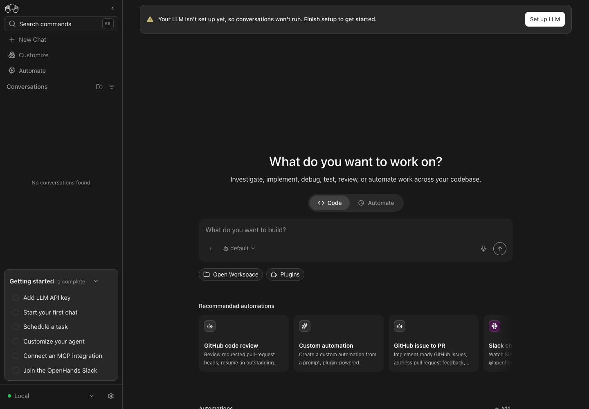

Films and evidence retain their recorded source revisions. Dated checks describe that snapshot; see the overview for the latest merge and audit status.
Delivery checks: all 39 public evidence payloads match their original SHA256, and both complete H.264/AAC films decode without errors. Real Canvas Before/After captures above were completed with installed Chrome through control-openhands. Native interaction with the published player was not rechecked in this pass.
Paper is the sixth theme
#19445 · Paper merged 7 November as 41c4b327fc. Future color/contrast checks enumerate all six registered palettes: OpenHands-DeepSea, OpenHands-Neutral, OpenHands-Neo, Light+, Solarized Light and Paper, including desktop and phone in fresh live color checks.
On merged main b79aa771e0, 73 tests /8 suites pass across registry-driven contrast, runtime persistence/bootstrap, embedding, terminal/syntax palettes, the context ring, scoped library CSS and packaging contracts. Full lint/type checking/formatting passes with 200 warnings /0 errors. These are automated/source/compiler checks; this pass adds no new live UI capture. Older five-theme films keep their recorded source revisions and coverage. Merged-main checks and scope.
Shared motion: main merged, approval retained
#19447 merged current main 6e0ff6c928 into 48b7c596dd. The two conflicts were the shared cn configuration and its tests. Both the newly merged text-size theme registrations and the approved transition/animation aliases are retained, with both test groups intact.
151 focused tests /6 suites, full lint/type checking/formatting (202 warnings /0 errors) and fresh app/library builds pass against main's committed lockfile. All seven motion substitutions, normal/important CSS contracts and pulse keyframes are preserved. Package/lock, runtime configuration and lint policy equal main. The original film below remains bound to its recorded revisions; this routine merge adds no new motion behavior.
Merged 7 November as b79aa771e0, after conflict resolution, retained approval and green CI. Original motion recordings and the 48b7c596dd merge-validation receipts remain preserved.
Merge and validation receipt · Current-main source and compiler equivalence.
Named motion, identical properties
#19447 addresses #19443: seven arbitrary values in five owners use named shell, transform, ring, panel, sidebar and status-pulse recipes. Transition property lists, duration/easing fallbacks and important modifiers stay exact; the pulse stays 1.2s with the same keyframes. Registering aliases in cn preserves later caller overrides. Existing consumers and scoped build pass: 134 tests /5 suites; branch lint 235→228 warnings, zero errors.
Recorded After 545c0fca62; final fc68bc13d2 relocates only unchanged recipes, guidance and contract tests. Desktop/phone form and reduced-motion snapshots plus desktop sidebar computed samples match exactly. The form is never submitted. Existing important-shell versus normal reduced-motion precedence remains unchanged. Conversation-panel width, context-ring changes and running status pulse are compiler/unit/source-only. Seven normal/important compiled contracts, pulse keyframes and normalized source substitutions match both actual app/library outputs.
Independent from the same main baseline 8a0cd446ce; neither After includes the other proposal or the concurrently merged grids/focus changes. Installed Chrome and unmodified control-openhands, pinned real Local SDK 1.60.1, default theme. No model/profile/provider credential setup or execution. Other themes, Cloud/ACP, planning/delegated and embedded modes are source/compiler/unit-only. Owned stacks are stopped/private-purged. Films bind to their recorded commits; the final follow-ups only relocate unchanged CSS, guidance and motion contract tests beside their owners. Fresh final app/library builds and compiler equivalence are recorded separately. Sampled clips show triggers and final states, not exact wall-clock timing. Public-player interaction was not rechecked in this pass; full-film decode, bytes and HTTP delivery are checked separately.
Sources, hashes and limitations · Exact source/compiler proof · 6 original PNGs and four complete sampled native clips.
Keep four clean appearance owners free of inline styles
#19448 addresses #19444: no-inline-styles becomes an error only in divider, toggle-switch, combobox-caret and backend-status-dot. Unadopted owners keep warnings, the embedding root keeps its caller-owned style exception, and numeric/semantic custom properties still pass.
Seven real ESLint tests pass after four expected pre-adoption failures. Actual diagnostics and unchanged product trees prove four new error owners, two warning controls, the embedding exception and unchanged other effective rules/options. Product source, runtime configuration and dependency trees equal the original baseline. Full lint/type checking/formatting passes at 235 warnings /0 errors on this independent branch. This nonvisual policy change has no UI delta or fabricated Before/After film; native-button caller style forwarding remains a public API.
Merged 7 November as 6e0ff6c928, after approval and green CI. Original branch evidence and the successful harness rerun remain preserved in the dated receipts.
Named text, identical sizes
#19437 addresses #19433: eight values in eight consumers use text-4xs (9px), text-xs-plus (13px), text-sm-plus (15px) and text-title (32px). Each role sets only font-size, with no added line-height. Names are registered in cn's text-size theme so colors remain independent and later caller sizes/leading retain their precedence.133 tests /6 suites and full lint/type checking/formatting pass; 235→227 warnings, zero errors.
Before main 8a0cd446ce, After 1af85235c3. Four actual paired views retain identical sampled size, family, weight, leading, tracking, color and bounds. Live coverage is the 32px Home heading and 9px MCP help glyph. Status, uploaded-file labels, plan/suggestion text and Cloud upgrade labels are compiler/unit/source-only. All four actual app/library CSS contracts and eight normalized consumer substitutions match.
Independent directly from the same clean main; neither After includes the other proposal. Installed Google Chrome, unmodified control-openhands, real pinned Local SDK 1.60.1 and default theme. Other themes, Cloud/ACP, planning/delegated and embedded modes are source/compiler/unit-only. No model/profile or provider-credential setup/execution; the MCP form is never submitted. Owned stacks stopped/private-purged, ten ports closed for each comparison. Original captures are unchanged; sampled recordings do not establish wall-clock timing.
Merged 6 November as cf0b43ca08, after approval and green CI. Original film and commit-pinned source receipts remain preserved.
Sources, hashes and limitations · Exact source/compiler proof · Eight original PNGs and four complete sampled native clips.
Named layouts, identical columns
#19438 addresses #19434: seven values in five consumers use metadata-grid-columns (auto /1fr), automation-summary-columns (auto /minmax(0,1fr)) and sm:run-log-detail-columns (5rem /minmax(0,1fr)). Each utility sets only grid-template-columns; run-log details retain their 40rem media boundary. The five consumers use static owner strings without caller className overrides, so no shared merger changes.46 tests /6 suites and full lint/type checking/formatting pass; 235→228 warnings, zero errors.
Before main 8a0cd446ce, After c2b5129548. Four actual paired views retain identical sampled tracks, gaps, child bounds, text metrics and truncation. The demo app comes from the first-party repository at immutable 8a0cd446ce, with the same Ref/Path metadata on each side, and stays disabled. The automation uses an inert qa.grid.never trigger and never runs. Run-log details, the tool visualizer and Home run-summary variants are compiler/unit/source-only. All three actual app/library CSS contracts and seven normalized consumer substitutions match.
Independent directly from the same clean main; neither After includes the other proposal. Installed Google Chrome, unmodified control-openhands, real pinned Local SDK 1.60.1 and default theme. Other themes, Cloud/ACP, planning/delegated and embedded modes are source/compiler/unit-only. No model/profile or provider-credential setup/execution; the MCP form is never submitted. Owned stacks stopped/private-purged, ten ports closed for each comparison. Original captures are unchanged; sampled recordings do not establish wall-clock timing.
Merged 6 November as 54abf0114a, after bot approval. Original evidence and its exact baseline remain preserved.
Sources, hashes and limitations · Exact source/compiler proof · Eight original PNGs and four complete sampled native clips.
Keep the completed layer migrations enforceable
#19439 addresses #19435: adopt arbitrary-value errors in modal-backdrop, environment-switch-overlay, context-window-meter and conversation-panel-wrapper. The four existing error owners stay adopted; all remaining owners, routes and primitives keep warnings. The two other layer-migration consumers still have unrelated arbitrary values and stay warning-only.
The actual ESLint before/after proof shows four warning1→error2 changes, four retained error2 controls and three retained warning1 controls, with every other effective rule/option equal.26 tests /5 suites and full lint/type checking/formatting pass, unchanged at 235 warnings /zero errors. Main 8a0cd446ce, head 1691c6973e; product src, runtime config and package/lock Git trees are byte-identical. Neither styling proposal is a prerequisite.
Current head 1691c6973e: all 8 effective checks pass, 6 skip; all-hands-bot review requested after green CI. Recorded source and captures above are unchanged.
Unchanged-main Home context
Shared clean-main screenshot from the type-scale baseline. This lint-only change has no visual delta; the actual ESLint diagnostics demonstrate enforcement.
Integer layers, identical stacking
#19262 addresses #19259: six exact substitutions across six consumers, with five integer utilities from z-1 through z-2147483646. All five app/library CSS contracts retain the original z-index; normalized source ASTs match. No CSS, dependencies, state, API or lint exceptions change.68 tests / 5 suites and full lint/type checking/formatting pass; warnings272→266, zero errors.
Before main dce9d017ab, After 22f035ad4e. The actual elevated ModalBackdrop remains fixed at z-index70, with identical full-viewport bounds and dialog attributes on desktop/phone. The other five layers are source/compiler/unit-only; the film does not claim to exercise those transient paths.
Both proposals are independent directly from the same clean main; neither After includes the other. Installed Chrome, unmodified control-openhands, default theme, pinned real Local services. No profile, conversation, provider credential or model execution. Other themes, Cloud, ACP, planning/delegated and embedded paths are source/compiler/unit-only. Each pair of owned stacks stopped/private-purged and ten ports closed. Original screenshots and complete sampled clips are retained; sampled recording is not wall-clock timing proof.
Merged6 November by this linting session as 8a0cd446ce, after bot approval and green CI. Original source bindings and recordings above are preserved.
Sources, hashes and limitations · Exact source/compiler proof · Original PNGs and complete sampled native clips.
Named corners, identical shapes
#19263 addresses #19260: 18 values in 15 consumers move to four named radius values:100px pill,15px composer,7px file action,3px facet control. The exact absolute pixels are preserved independently of root font size. Their names are registered once in cn's Tailwind merger so callers can still override them; regression tests cover normal and directional precedence.137 tests / 7 suites pass, including actual library CSS contracts. Full lint/type checking/formatting and app/library builds pass:272→254 warnings, zero errors.
Before main dce9d017ab, After d020f03b0d. Four real paired views have identical sampled corner radii, dimensions and bounds. Mobile Skills hides facets, so its view is context only. File actions, status, Cloud upgrades and specialized branches use source/compiler/unit coverage only.
Both proposals are independent directly from the same clean main; neither After includes the other. Installed Chrome, unmodified control-openhands, default theme, pinned real Local services. No profile, conversation, provider credential or model execution. Other themes, Cloud, ACP, planning/delegated and embedded paths are source/compiler/unit-only. Each pair of owned stacks stopped/private-purged and ten ports closed. Original screenshots and complete sampled clips are retained; sampled recording is not wall-clock timing proof.
Merged6 November by Engel as ca70aaeeb3, after bot approval and green CI. Original source bindings and recordings above are preserved.
Sources, hashes and limitations · Exact source/compiler proof · Original PNGs and complete sampled native clips.
Reject new arbitrary values in four migrated owners
#19264 addresses #19261: the already-clean command menu, backend version, settings navigation header and backend-synced badge become exact-path error owners. All unadopted paths keep warnings. Every other rule, option and exception stays the same. This is a proposal; merged-main rule status below remains warnings.
The actual ESLint before/after probe changes four w-[123px] diagnostics from severity1 to2 while three route, primitive and unmigrated controls stay at1. All other effective rules/options compare equal. Eight new actual ESLint tests and the four related rule suites pass:24 tests / 5 suites. Regression-first run failed the four intended severity changes. Full lint/type checking/formatting passes at272 warnings /0 errors. Base dce9d017ab, head 4290fe5aa7; source, runtime config and package/lock trees are byte-identical. Neither styling PR is a prerequisite.
Merged6 November by Engel as fc9f801f0e, after bot approval and green CI. Original source bindings and recordings above are preserved.
Unchanged-main Home context

Shared clean-main screenshot from the corner-radius baseline. This lint-only change has no visual delta; actual ESLint diagnostics above demonstrate enforcement.
Finish the two shared compact recipes
#19166 initially needed a correction: the bot correctly found two omitted shared helper values. Both settings-label and extension-pill recipes now use the 11px token. The complete migration is 47 values in 41 consumers; the reported-warning reduction remains 45 (323→278) because the helpers were unreported.
Current head ae227870ac normally merges main 172d7f1800 and preserves its compact-status screen-reader behavior.129 focused tests across 7 suites, full lint/type checking and formatting pass.13 visible shared pills match in size, leading, weight, tracking, colors and bounds on desktop/phone. The legacy settings 404 fallback has compiler/unit coverage only; no other-theme, provider or embedded live claim. No model runs. Both owned stacks stopped/private-purged and ten ports closed.
Merged 2 November as 59b18013ee after bot approval and all eight effective checks passed. The previous finding is resolved; merged product/config/dependency trees match the approved After capture. Original October media and bindings below remain dated evidence, not a fresh claim about intervening main changes.
Sources and limitations · Exact source/compiler proof · Original screenshots and complete sampled native clips.
Existing theme names, identical colors
#19216 addresses #19215: seven substitutions in four files, against its independent 172d7f1800 baseline: 323 / 0 → 316 / 0. The three existing utilities compile to the exact same custom-property references, with identical class merging. No CSS, theme values, dependencies, state, APIs or rule exceptions change.23 tests across 3 focused suites and full lint/type checking/formatting pass.
Base 172d7f1800 and head b0681ecfa3 change disjoint files from typography #19166; neither depends on the other. Real desktop/phone No-workspace menu colors, font metrics and bounds match; no conversation, profile or model execution. Pending send/onboarding, unsupported-workspace and automation-header branches, other themes, providers and embedded modes have compiler/unit/source coverage only. Both runs stopped/private-purged and ten ports closed.
Merged by Engel on 2 November as f40a2e5ed4 after bot approval. This is a user merge; original source bindings and recordings are preserved.
Sources and limitations · Exact source/compiler proof · Original screenshots and complete sampled native clips.
Compact metadata: named sizes, identical text
PR #19166 addresses #19165. Two font-size tokens replace 45 arbitrary values across 39 consumers: main c28f46fdb5 has 323 warnings / 0 errors; proposal eacff649a2 has 278 / 0. The initial capture passed 194 tests across 12 suites. The final head passes 211 tests across 13 suites after a test-only assertion correction, plus full lint/type checking, normal commit hooks and actual app/library builds pass. The tokens retain 11px and 10px without a new line-height default, including existing Typography/caller override behavior.
Six real paired Local views have zero differences in 27 viewport-intersecting compact text samples: size, line height, tracking, weight, color and bounds match. Phone settings is unchanged context without compact labels in view. Installed Chrome, unmodified control-openhands and pinned real services; no LLM profile, credentials or model/tool execution. Default theme and standalone Local only; other modes, hosts, themes and branches have source/compiler/unit coverage. Both owned stacks are stopped/private-purged and ten ports closed.
Sources and limitations · Computed comparison · Exact consumer and compiler proof · Twelve original PNGs and four complete sampled recordings. Final source binding: the test-only fix retains the exact recorded product, config and dependency trees. Historical October 31 green CI snapshot. Bot review later found two omissions; see the November 2 follow-up above.
Merged: reject raw colors in three migrated owners
PR #19163 promotes raw-color findings to errors only for backend status, Markdown alerts and MCP health. Global severity, the two unfinished start-task owners and all seven exact legacy-token exceptions stay unchanged. It merged as c28f46fdb5 on 31 October, after bot approval. Its original standalone proposal audit remains 344 warnings / 0 errors.
The actual ESLint probes fail on base and pass after the policy change: three owner errors, four outside warning controls, semantic roles accepted and exceptions identical. Sixteen tests across four rule suites and full lint/type checking pass. Before/After diagnostics · Unchanged-main UI context provenance. This config/test/guide-only PR and dialog #19161 start from the same b4a3f45a28 main and change disjoint files. Neither depends on the other; this policy change has no new UI footage.
Merged 31 October after green CI and bot approval; original evidence retained.
Dialog constraints: the same viewport bounds
PR #19161 addresses #19160. Fifteen source files migrate 21 reported findings and one shared unreported width declaration: main b4a3f45a28 has 344 warnings / 0 errors; proposal 5739caa282 has 323 / 0. The initial capture passed 108 tests across seven suites. The final head passes 142 tests across nine suites after test-only CI fixes, plus lint/type checking, normal commit hooks and app/library builds.
Five matched real Local dialog views have zero visible-subtree geometry/text-metric differences. Ten app/library contracts match literally in both outputs. Existing CSS formatter whitespace/hex-letter case is normalized, with no color-value change. Installed Chrome, unmodified control-openhands, real pinned services, default theme; no conversation or model execution. Other dialogs, Cloud, ACP, embedding and other themes have source/compiler or unit coverage only. The initial loading-state mismatch was discarded and both sides retaken after waiting for catalog cards. Both owned stacks are stopped/private-purged and ten ports closed.
Sources and limits · Comparison · Ten original PNGs and four complete recordings. Final source binding: test-only fixes retain the exact recorded product code. Merged 31 October as 9985057004, after green CI and bot approval; original evidence retained.
Shared menu geometry: the same sizes, named owners
PR #19120 addresses issue #19118: one larger batch across 18 source files removes 31 reported findings and migrates one matching unreported metadata-label declaration. Base 940dc61587 has 375 warnings / 0 errors; head ded09edd77 has 344 / 0. There are 206 passing tests across 16 suites and six existing todos; full lint, type checking, normal commit hooks and app/library builds pass locally.
Twenty-four paired real views compare 1,963 selected fields, including fonts and line heights, with zero differences. Canvas 1.34.0, Agent Server 1.59.0, automation 1.26.1, installed Google Chrome, default OpenHands-Neutral, standalone Local. The same unchanged committed-lock installation is used at both revisions. A genuine DeepSeek profile enables the controls with validation skipped; no message or model/tool execution occurs. Both owned stacks are stopped/private-purged and all ten ports are closed.
The 32 class values normalize to identical source ASTs; 36 actual app/library CSS contracts retain their units, scope and layer. Only explicit calc(1 * -1) arithmetic is normalized; both real measuring layers compute to −1. No colors, callbacks, state, API contracts, dependency versions or verification recipes change.
The phone agent-profile pill is intentionally hidden. Its Tools submenu is reachable but already clips beyond the viewport; that existing clipping is preserved. No touch-device, other-theme, authenticated Cloud, live ACP or embedding claim. Cloud-only launch/Code-Plan details, provider Git submenu, inactive label branches and automation Kebab have source/compiler or unit coverage. The backend selector always matches its trigger: its live view does not prove the intrinsic-width public Dropdown cap, which is covered by rendered-consumer/build tests. Selected-field equality is not whole-page pixel identity; sampled native footage is not wall-clock timing proof.
Sources, hashes and limits · Computed comparison · 48 unchanged PNGs and four complete original recordings · Immutable evidence commit.
What an agent is being asked to respect
Earlier 7 November main audit: 6e0ff6c928 has 209 warnings /0 errors. Rule inventory: 4 import-x/no-duplicates, 152 no-arbitrary-values, 51 no-inline-styles, 2 no-raw-colors. Exact relative-path diagnostics. The resynchronized motion branch has 202 warnings /0 errors; its seven-finding reduction remains independent of merged-main totals.
Previous published main audit, 6 November 2026: 54abf0114a has 224 warnings /0 errors: 171 arbitrary, 51 inline-style and 2 budget palette findings. The managed-focus PR #18520 merged as fb310b1ae8, then grids #19438 as 54abf0114a. Fresh relative-path diagnostics. The three new branch counts above use the original 235-warning baseline, not a combined-current-main claim.
Earlier merged-main audit, 6 November 2026: 8a0cd446ce has 235 warnings /0 errors: 178 arbitrary, 51 inline-style and 6 palette findings. The integer-layer, corner-radius and four-owner lint proposals are all merged. Exact relative-path diagnostics. Independent proposals: type scale 227/0, grids 228/0, new layer guards 235/0. These are separate branch counts, not a combined-main claim.
Previous merged-main audit,3 November 2026: dce9d017ab has 272 warnings /0 errors: 203 arbitrary, 51 inline-style, 18 palette findings. Alias #19216 is merged. Since the previous278-warning audit, seven alias findings were removed and a new arbitrary conversation-title animation adds one finding. Exact relative-path diagnostics. Independent proposals: layers266/0, corners254/0, bounded enforcement272/0. These are separate branch counts, not a claim about combined main.
Previous merged-main audit,2 November 2026: 59b18013ee has 278 warnings / 0 errors: 209 arbitrary, 51 inline-style and 18 palette findings. All 47 compact values are migrated. Exact merged-main audit. That dated alias proposal was measured against its own 172d baseline and merged on 2 November.
Earlier main audit, 2 November 2026: 172d7f1800 has 323 warnings /0 errors: 254 arbitrary, 51 inline-style and 18 palette findings. Exact audit. Separate proposals: typography 278 / 0 and existing aliases 316 / 0.
Historical merged-main audit, 31 October 2026: c28f46fdb5 has 323 warnings and zero errors: 254 arbitrary values, 51 inline styles and 18 palette findings. Exact relative-path audit. The compact-font proposal is separate at278/0.
Historical merged-main audit, 30 October 2026: 940dc61587 has 375 warnings and zero errors—306 arbitrary values, 51 inline styles and 18 palette findings. The exact audit is separate from the open 344-warning menu proposal. Historical snapshots below retain their original source revisions.
Put a rule in the repository where every contributor can run it, give the finding an actionable message, and define the exceptions where the value is owned. A warning exposes migration work. An error makes a new violation fail lint.
| Rule | Enforcement |
|---|---|
no-unknown-classes | Error for unknown utilities. |
require-static-classes | Error on shared UI consumers, with documented narrow exceptions. |
no-restyle | Error for the adopted divider, toggle, and caret contracts. |
no-raw-colors | Error in the three migrated backend-status, Markdown-alert and MCP-health owners; warning elsewhere. Seven exact legacy-token exceptions remain. |
no-inline-styles | Warning while dynamic styles are reviewed by their owners. |
no-arbitrary-values | Error in command-menu, backend-version, settings-nav-header and backend-synced-settings-badge; warning elsewhere. Four more migrated layer owners are proposed above. |
Exact main 6284908600 machine ESLint audit: 402 warnings and zero errors. The public audit preserves repository-relative diagnostics; the fixed backend branch has 390 warnings and zero errors. Earlier audited revisions retain their historical inventories below.
Historical integrated-main audit at exact ec0f70fe31, completed 26 October at 06:56 Stockholm time: 0 errors and 417 warnings across 1,425 linted files, with diagnostics in 176 files — 348 arbitrary-value findings in 163 files, 51 inline-style findings in 32 files and 18 palette findings in four files. Full lint, machine ESLint, typecheck and formatting pass. Exactly 42 findings were removed and none added versus 7a41641c6d. The public audit preserves exact commands/environment/comparison; SHA-256 3bba95c88ce62dba88068f2f531c97210541bd8a94142d8129992dc03536aad4. The independent command/backend proposal inventories are not integrated.
Historical integrated-main audit at exact 7a41641c6d, completed 26 October at 00:08 Stockholm time: 0 errors and 459 warnings across 1,425 linted files, with diagnostics in 179 files — 390 arbitrary-value findings in 166 files, 51 inline-style findings in 32 files and 18 palette findings in four files. Full lint, machine ESLint, typecheck and formatting pass. Exactly twenty findings were removed and none added versus 044ec59e12. The public audit preserves commands, environment and comparison; SHA-256 c57a3d0d1d4f5b2484df483f0c91d0b752ee4219517763c83f03985989e47afe. Active Node 24.22.1 and npm 11.12.1 are recorded separately from the repository Volta Node pin. The new 417-warning proposal is not integrated.
Historical integrated-main audit at exact 044ec59e12, completed 25 October at 22:01 Stockholm time: 0 errors and 479 warnings across 1,425 linted files, with diagnostics in 186 files — 410 arbitrary-value findings in 173 files, 51 inline-style findings in 32 files and 18 palette findings in four files. Full lint, machine ESLint, typecheck and formatting pass. Exactly 29 findings were removed and none added versus c561259930: seventeen profile aliases and twelve Files bindings. The public audit preserves exact commands and comparison; SHA-256 65295d88364b60da49c5e8f2f7ae26bc79f7ed375b702a420a92c75f2d7af1a6. New draft branch reductions are not integrated.
Historical integrated-main audit at exact c561259930, completed 25 October at 11:38 Stockholm time: 0 errors and 508 warnings across 1,425 linted files, with diagnostics in 191 files — 439 arbitrary-value findings in 178 files, 51 inline-style findings in 32 files and 18 palette findings in four files. Full lint, machine ESLint, typecheck and formatting pass. Exactly 95 findings were removed and none added versus 1abbd4b415: 77 arbitrary values and 18 inline styles from the merged automation/dropdown pair. The public audit preserves exact commands and comparison; SHA-256 26aac3a5821323c5277f2f7789863827b6f3ab992b604e0ce856b4d74a822279. New draft branch reductions are not integrated.
Historical integrated-main audit at exact 1abbd4b415, completed 25 October at 00:56 Stockholm time: 0 errors and 603 warnings across 1,425 linted files, with diagnostics in 192 files — 516 arbitrary-value findings in 178 files, 69 inline-style findings in 33 files and 18 palette findings in four files. Full lint, machine ESLint, typecheck and formatting pass. Exactly six findings were removed and none added from fee10e3d29. The public audit preserves the exact commands and comparison; SHA-256 99fd300b378a8a30b37ef9ab46ddf2e8e87a63dc8d841f03737bcf83c847fb9b. New draft reductions are not integrated.
Historical integrated-main audit at exact fee10e3d29, completed 24 October at 11:16 Stockholm time: 0 errors and 609 warnings across 1,425 linted files, with diagnostics in 193 files — 519 arbitrary-value findings in 179 files, 72 inline-style findings in 34 files and 18 palette findings in four files. Full lint, machine ESLint, typecheck and formatting pass against the unchanged committed lock. Compared with exact 084a410604, the merged backend height/transition and Files width changes remove exactly three findings, with no additions. The full public audit preserves exact commands, environment and diagnostic comparison; SHA-256 a242caaa2b9ac66d64dd81ba15cd3ad059fa3ffab9e6f89b142f6937495687dc. Future scope reductions remain separate.
Historical integrated-main audit at exact 084a410604, completed 24 October at 09:07 Stockholm time: 0 errors and 612 warnings across 1,425 linted files, with diagnostics in 193 files — 520 arbitrary-value findings in 179 files, 74 inline-style findings in 36 files and 18 palette findings in four files. A fresh locked install, full lint, machine ESLint, typecheck and formatting pass. The two merged inline findings disappear; three unrelated arbitrary-value findings are added, for a net increase of one from the prior 611-warning audit. The full public audit preserves the exact commands, environment and normalized comparison; SHA-256 a928b8c551bd68d76e8d8cdbb0572f841a65c16aa3fa7c1c554f86b32dcfb5d0. These counts belong to this exact revision, separate from any later main tip or follow-up proposal.
Historical integrated-main audit at exact 3083e1aa16, completed 23 October at 07:26 Stockholm time: 0 errors and 611 warnings across 1,420 linted files, with diagnostics in 191 files — 517 arbitrary-value findings in 177 files, 76 inline-style findings in 38 files and 18 palette findings in four files. A fresh locked install, full lint, machine ESLint, typecheck and formatting pass. Compared with the prior 615-warning audit, the merged sidebar/tree work removes four inline findings; an unrelated automation prompt width replaces one arbitrary-width diagnostic with another, without changing that rule’s count. The full public audit preserves every active relative-path message, commands, environment and normalized comparison; SHA-256 4a2db83d8e6807621eacae3e9c54677e7adb75d9fa5fc69fd71453a8e4fa01fc. The onboarding and bar-height proposals were not integrated at this earlier revision. Both have since merged; the fresh exact-source audit is recorded above.
Historical integrated-main audit at exact 70b8f9069d, completed 22 October at 05:04 Stockholm time: 0 errors and 615 warnings across 1,419 linted files, with diagnostics in 192 files — 517 arbitrary-value findings in 177 files, 80 inline-style findings in 40 files, and 18 palette findings in four files. A fresh locked npm ci --ignore-scripts, full lint, configured machine ESLint, typecheck and formatting pass. The only normalized diagnostic changes from the prior 617-warning audit are the merged Markdown-preview cap and activity-track findings. The full public audit preserves every active relative-path message, commands, environment and comparison method; SHA-256 8df2711affa0ca96c803da644331b17fb662c37f6870123854568f3b831cce58. The sidebar/tree proposals were not integrated at that earlier audit.
Historical integrated-main audit at exact ea2f42bf6e, completed 22 October at 01:29 Stockholm time: 0 errors and 617 warnings across 1,419 linted files, with diagnostics in 193 files — 517 arbitrary-value findings in 177 files, 82 inline-style findings in 41 files, and 18 palette findings in four files. Full npm run lint, the configured eslint src machine audit, typecheck and formatting pass. The only normalized diagnostic delta from the prior 618-warning main audit is the one removed overview-column width finding. The full public audit preserves every active relative-path message, commands, environment and comparison method. Its SHA-256 is c16d1d6eee9eedb9985feb9802334c4036b6ec76e1009750c0cee39aa1912ce9. The preview and sparkline proposals were not integrated at that earlier audit.
Historical integrated-main audit at exact 630e587a0d, completed 21 October at 13:54 Stockholm time: 0 errors and 618 warnings across 1,417 linted files, with diagnostics in 194 files — 517 arbitrary-value findings in 177 files, 83 inline-style findings in 42 files, and 18 palette findings in four files. Both actual npm run lint and the same configured eslint src target pass; typecheck and formatting pass too. The full public audit preserves all active relative-path messages, exact commands, environment and owner triage. Its SHA-256 is 781fa6883e4c194b5ef2b72445ed14fa598bd35793c3c10b5504360a5bd574b0.
The 27-warning reduction from the 20 October audit includes 22 palette findings removed by the merged health-dot and Markdown alert batches. Seven arbitrary-value warnings disappeared with the old automation setup prompt stack, offset by two new profile-picker warnings. Another 47 hardcoded-color messages across 20 files are included in the 517 arbitrary-value findings. The remaining 18 palette warnings belong to managed-agent focus (four), budget fills (two), and unreachable start-task badges/indicators (twelve). Seven exact legacy-token exceptions remain necessary; no rule severity or broad all-string exception change is proposed. The overview, preview and sparkline reductions are now separately measured on integrated main. The sidebar/tree reductions are now measured on integrated main. Onboarding and bar-height proposals each removed one scoped warning on their recorded branches and have since merged; the fresh exact-source main audit independently confirms those two removals.
Historical main 8d39305538, audited 20 October at 00:40 Stockholm time, recorded 0 errors and 645 warnings across 1,408 linted files: 522 arbitrary values, 83 inline styles and 40 palette findings. Its unchanged public audit and SHA-256 62315fdf08d20d0484ea2d180a94c5e393f4df3eb2f1a86cbe8aa3a857c84a0d remain dated history.
Historical main 83c9b64af6, audited 19 October at 03:19 Stockholm time, recorded 0 errors and 616 warnings: 521 arbitrary values, 89 inline styles and six palette findings, before the three merged follow-ups. Its unchanged public audit remains a dated baseline; the scan proposal's 650-warning audit is also historical.
Historical main audits at 3419bdb4f7 and 0c7c2258a8 each recorded 669 warnings on 16 October. The dated snapshot preserves both unchanged, plus the original proposal audit. The composer popover's four raw-color declarations were outside the rule's analysis; merged #18504 migrated them without reducing the then-reported raw-color count.
The consent batch #18508, audited at proposal head dd4987f1d5 before its later merge, reports 0 errors and 668 warnings, including 56 raw-color findings in 16 files. These are historical proposal-head counts, separate from the current 417-warning integrated-main audit above. The snapshot records both revisions and commands.
Model profile messages in #18510, audited at e71b4499fa on base 3419bdb4f7, report 0 errors and 659 warnings: 47 raw-color findings in 16 files. This branch removes ten reported findings and does not include the separate consent proposal. Each inventory belongs to its pinned branch; the snapshot preserves their separate counts and commands.
Primitive implementations own their appearance, so no-restyle and require-static-classes are off inside src/ui. Layout remains available to callers. Stateful carets expose isOpen for rotation; the generic caret icon retains caller orientation.
Numeric CSS custom properties and semantic token references pass the inline-style rule. Measured dimensions, portal positioning, accessibility helpers, and renderer contracts need an owner audit. The exact agent-server-ui-root.tsx exception preserves its public, caller-owned style and styleOverrides API.
DeepSea: readable danger text
807a93d213 head gives DeepSea a readable error-text override.The 95% state is genuine usage against a configured 16,384-token budget, with no tools run. Twenty-two focused tests and full CI pass. The bot approved this exact #18431 head on 16 October at 01:40 Stockholm time; the PR merged on 16 October.
The original Before / After films
Recorded with control-openhands, production Canvas builds, Chrome, and the same real local Agent Server 1.54.0. The film compares a common base with all four proposal heads combined in an isolated worktree, all four now merged. The lint-only scenes show actual ESLint results. Credential fields stayed empty; no model execution was needed.
Keyboard focus and the legacy scrim
The prepared batch is tracked in #18324. Real production Canvas and Agent Server 1.54.0, desktop and phone, no LLM call, quiet original ambience. Default outlines measure 3.26–14.74:1 in the actual inspected states. Revisions, measurements, and the generated legacy CSS.
Readable validation and form errors
Real control-openhands captures with Agent Server 1.54.0 in all five themes and on desktop and phone. Light+ contrast improves from 2.89:1 to 5.86:1; Solarized Light improves from 2.68:1 to 5.61:1. The PR replaces 19 raw-color findings across 15 consumers. Source revisions, measurements, and test results.
Theme-aware warning feedback
In Light+, Home warning contrast rises from 1.36:1 to 5.26:1 and Apps trust text from 1.08:1 to 5.80:1. In Solarized Light, they rise from 1.30:1 to 5.78:1 and 1.00:1 to 6.18:1. ACP conflict text stays above 6.10:1 across five themes. Captures cover desktop and phone widths with no horizontal overflow. The batch is PR #18333, tracked by issue #18331. Source revisions, contrast measurements, and test results.
Proposals in this area
Existing theme aliases
Open · ready#19216: seven findings removed independently of #19166;23 tests pass. Before/After and download. CI green; bot review requested.
Compact metadata type scale
Merged ·2 November#19166 merged as
59b18013eeafter approval:47 values in 41 consumers, including both review omissions. Follow-up evidence. Current main 278 / 0.Error on raw colors in migrated owners
Merged · 31 October#19163 merged as
c28f46fdb5, after green CI and bot approval. Three audited owners reject regressions; global warnings and exact exceptions remain. Original diagnostics.Shared dialog viewport constraints
Merged · 31 October#19161 merged as
9985057004, after green CI and bot approval:21 findings removed across15 files;142 tests passed. Original Before/After.Expose palette colors hidden in class maps
Merged · 19 October#18643 adds scanning for five audited class-map owners, exposing 34 genuine palette declarations that the default analysis misses. Its five focused rule tests pass. It changes lint coverage, without changing UI colors; the proposed raw-color count becomes 40. Full lint reports 0 errors and 650 warnings, and code CI passes. The actual CI execution summary shows the completed checks; it is nonvisual tooling evidence. Exact newly exposed findings and source details. Current checks: 13 passed and two skipped, with description validation green. all-hands-bot approved exact head
65828a3d51; the maintainer merged it at 04:46 Stockholm time as9f166c97fd, before the approval watch.Put Canvas tokens in the Tailwind theme
Merged · 21 September#17435 established the first shadcn-lint pass and mapped the existing
--oh-*theme tokens into Tailwind. It gave the linter the same named colors the app uses.Reject classes Tailwind does not know
Merged · 5 October#17644 enabled unknown-class errors with verified theme loading, so a plausible-looking but nonexistent utility cannot pass silently.
Make shared UI classes inspectable
Merged · 5 October#17916 required static classes on Canvas UI consumers. Primitive variant helpers stay under the component owner's control; documented exceptions account for the plugin's analysis limits.
Upgrade the analysis before adding more rules
Merged · 5 October#17987 pinned
@shadcn/lint0.2.0. The dependency upgrade and each later rule activation remain separate changes.Expose raw palette colors as warnings
Merged · 6 October#18006 staged
no-raw-colorsat warning severity, with eight exact legacy-token exceptions. #18004 tracks the migration that must precede error enforcement.Give dividers and toggles one appearance owner
Merged · 10 October#18194 enabled
no-restyleerrors for the first settled component contracts. Callers keep layout; the toggle button also permits opacity for disabled or pending state.Let the caret own its rotation
Merged · 11 October#18274 extended the appearance guard to carets. Stateful callers use
isOpen; a caller-suppliedrotate-*override now produces an actionable lint error. Existing UI appearance is preserved.Audit inline styles before enforcing them
Merged · 11 October#18275 turned
no-inline-styleson as warnings. Its audit recorded 87 findings across 45 files after the exact embedding-root exception. Those are migration findings at that audited revision, rather than a claim about today's total lint count.Update the shadcn analysis pack
Merged · 12 October#18315 pins
@shadcn/lint0.2.1 after signature, provenance, and source review. Paint-clearing SVG classes and custom font sizes are recognized correctly; adopted rule severities are unchanged.Remove the redundant font-size exception
Merged · 13 October#18320 removes
text-mediumfrom the raw-color allow list now that the pack recognizes it as a font size. Existing font sizes and the seven color exceptions remain unchanged. This lint-only cleanup was kept separate from the color batches.Use readable focus and valid legacy opacity
Merged · 16 October#18327 implements issue #18324: backend outlines follow the host focus role, Solarized focus reaches 3.26:1 on hovered neutral surfaces, and the exported legacy drawer scrim compiles to 50% opacity. The original audit recorded three raw-color findings. The film records
8c8573b188, including the Providers card. The final headff33f4a7dbpreserves that behavior and removes minor-change spec bookkeeping. The PR merged at 06:12 Stockholm time; the scrim remains compiled-CSS evidence.Use readable validation and service errors
Merged · 13 October#18330 moved 19 raw-color findings across 15 consumers to existing feedback and danger roles. Light+ contrast improved from 2.89:1 to 5.86:1, and Solarized Light from 2.68:1 to 5.61:1. All five themes passed on desktop and phone; see the historical film above.
Give warning text its own theme role
Merged · 12 October#18333 introduces
text-feedback-warningfor six yellow/amber findings across four warning paths. The role is separate from controlwarning; Light+ and Solarized Light text now passes 4.5:1 on the tested surfaces. The PR is merged. See the warning film above and issue #18331.Keep minor color fixes free of spec bookkeeping
Merged · 16 October#18499 removes the context-color batch's added spec notes and tags. Runtime behavior, focused tests, and recorded evidence stay intact. Backend focus and connection banners received the same cleanup before their own merges.

Message and motion owners reject arbitrary values
PR #19484 adopts errors in six already-clean owners: custom-toast-handlers, form-control-classes, chat-status-indicator, context-window-ring, user-message-body and conversation-main. Fourteen owners now reject arbitrary classes; other owners retain migration warnings. All other rule options and product/runtime/dependency trees match main.
25 lint probe tests pass. Full lint/typecheck/formatting stays at 200 warnings and zero errors. Effective-config and unchanged-product proof · Fresh main audit. This batch changes enforcement only, so no visual delta is claimed.